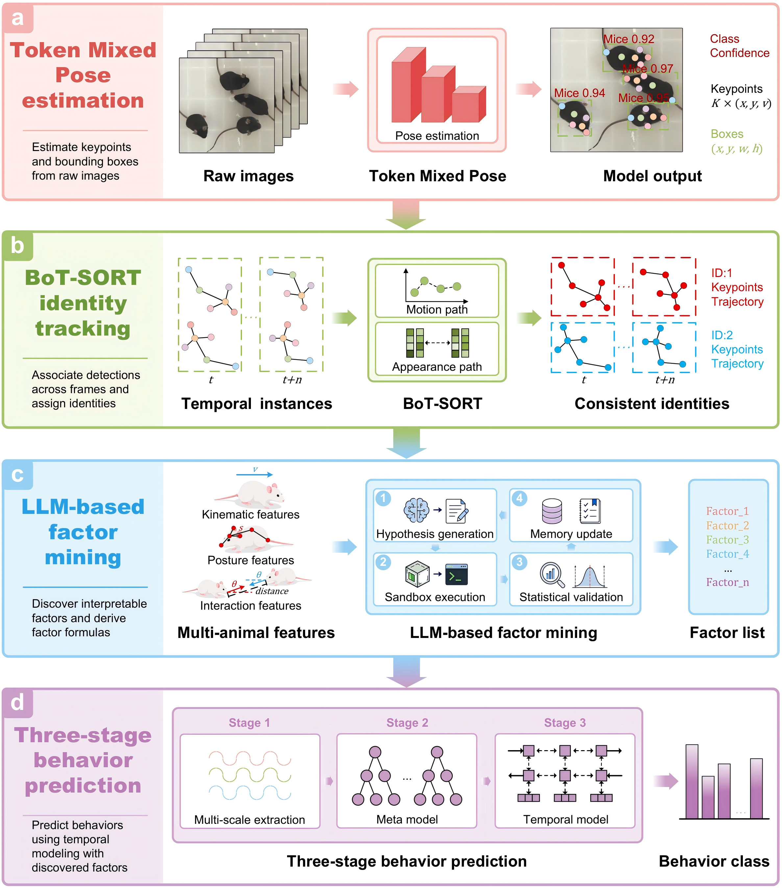
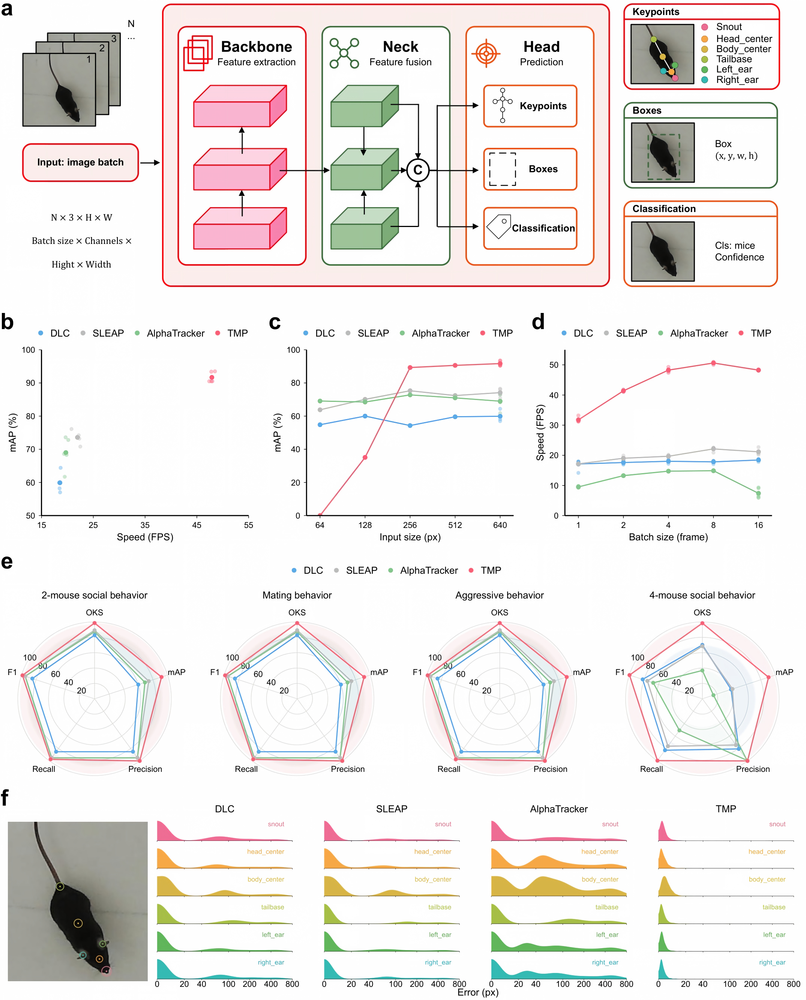
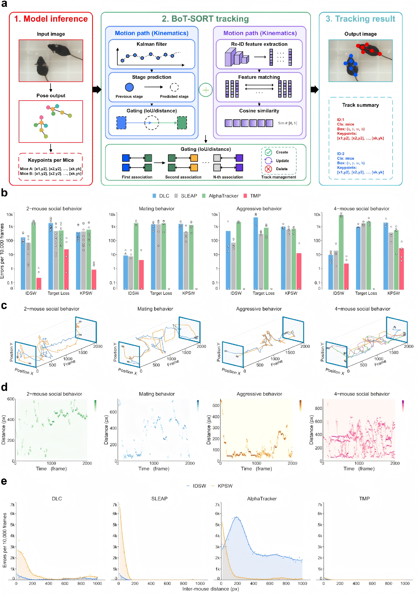
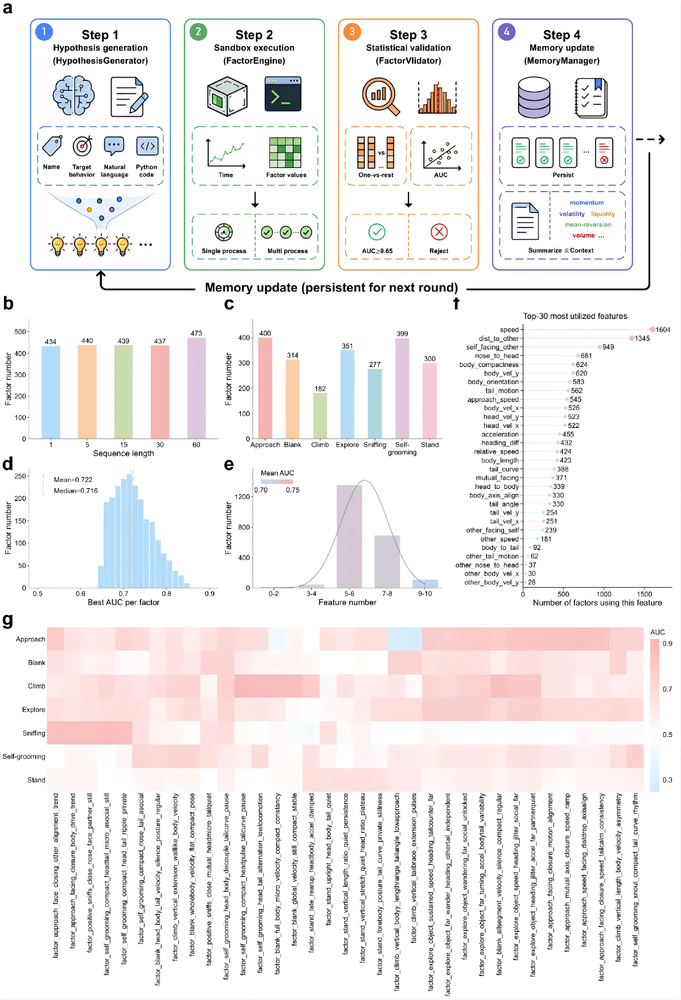
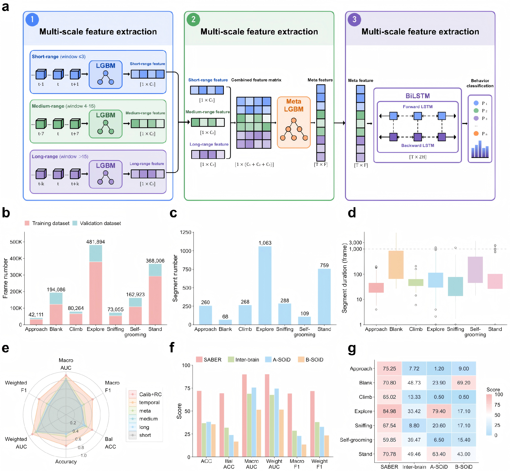

SABER couples multi-animal pose estimation with identity-preserving tracking, LLM-assisted behavioral factor mining, and multiscale temporal behavior classification — all from a single overhead video stream, designed for social interactions in which animals overlap, occlude one another, and rapidly change posture.
The pipeline proceeds in four steps (Figure 1): pose estimation and identity-preserving tracking (panels a–b), LLM-assisted factor mining (panel c), and three-stage behavior prediction (panel d).
Across spontaneous interaction, mating, aggression, and four-mouse recordings, SABER improved pose accuracy and tracking continuity, and it detected behavioral changes in social-defeat-stress mice.

Quantifying social behavior requires accurate assignment of posture and actions to individual animals, but close contact, occlusion, and identity switches degrade pose trajectories and limit downstream behavior recognition. We developed SABER (Spatio-temporal Action Behavior Recognition), a locally deployable framework that couples multi-animal pose estimation with identity-preserving tracking, interpretable behavioral factor discovery (mining), and multiscale temporal behavior classification from a single overhead video stream. Across spontaneous social interaction, mating, aggression, and four-mouse recordings, SABER improved pose-estimation accuracy and tracking continuity relative to comparator pipelines. Its factor-mining procedure identified interpretable kinematic, postural and social descriptors, and temporal integration improved classification of seven behavioral categories. Applied to social-defeat-stress mice, SABER detected reduced approach behavior and a multivariate behavioral profile that distinguished depression-susceptible from control animals. SABER outputs could be synchronized with miniscope calcium recordings to link behavioral states to neural activity. SABER therefore provides an accessible route from social-interaction video to identity-resolved behavioral measurements suitable for phenotyping and brain–behavior analysis.
TMP follows a backbone–neck–head architecture designed for small, visually similar animals that frequently overlap. It combines feature-dependent receptive fields with attention — Semantic-Aware Grouping Attention, Partitioned Self-Attention, and Global Cross-Cluster Attention — to localize six mouse keypoints, and predicts per-animal bounding boxes and mice confidence from a single image batch.
Figure 2 benchmarks TMP against DLC, SLEAP, and AlphaTracker in OKS, mAP, precision, recall, and F1 across spontaneous social interaction, mating, aggression, and four-mouse recordings.
The head jointly predicts the six keypoints (snout, head center, body center, tail base, and left/right ears), bounding boxes, and a mice confidence score in one pass, with throughput stable from 64- to 640-px inputs and 1- to 16-frame batches (Figure 2, panels a, c–d).

Detections are associated across frames by BoT-SORT identity-preserving tracking: a Kalman-filter motion path and an appearance path (Re-ID features matched by cosine similarity) are gated by IoU and distance, with track management that keeps each animal’s identity stable through close contact and occlusion.
Figure 3 evaluates tracking quality with ID switches (IDSW), target losses, and keypoint switches (KPSW) per 10,000 frames against DLC, SLEAP, and AlphaTracker, and shows identity-resolved trajectories and inter-mouse distance traces across the four social settings.
Panel a details the pipeline: model inference, BoT-SORT association over first/second/N-th associations with create/update/delete track states, ending in per-identity track summaries.

To reduce reliance on manually specified behavioral features, SABER operates a closed factor-mining loop: a large language model proposes candidate factor formulas over pose-derived features, a sandboxed engine executes them over the video, and one-versus-rest LightGBM screening with AUC/F1 thresholds retains interpretable kinematic, postural and social descriptors. Accepted factors are fed back as experience to guide the next round of hypotheses.
Figure 4 summarizes what the loop discovers: factor counts per sequence length, the best AUC per factor, the top-30 most utilized features, and mined factor names for behaviors such as approach, sniffing, self-grooming, climbing, exploration, standing, and blank.
The loop runs as four components — a hypothesis generator, a sandboxed factor engine, a statistical validator, and a persistent memory manager — that pass accepted factors and experience across rounds (Figure 4, panel a).

Factors are grouped by temporal scale — short-, medium-, and long-range. Each group trains a dedicated LightGBM classifier; the per-group probabilities are stacked into a meta-learner; and a temporal stage (a 31-frame sliding-window temporal-LightGBM or a BiLSTM pathway) enforces behavioral continuity, yielding per-frame classification of seven behavioral categories.
Figure 5 benchmarks SABER against Inter-brain, A-SOiD, and B-SOiD in macro/weighted F1, balanced accuracy, and AUC per behavior.
Panels b–d summarize the training and validation datasets — hundreds of thousands of frames split into segments of varying duration — and panel a shows how short- (window ≤3), medium- (4–15), and long-range (>15) factor features are combined before the meta-learner and temporal stage.

SABER supports local installation, GUI operation, CLI execution, and Python API use. The desktop application mirrors the complete analysis workflow — pose training, factor discovery, three-stage behavior-model training, inference on new recordings, and validation — with identical results to the command-line tools.
Across spontaneous social interaction, mating, aggression, and four-mouse recordings, SABER improved pose-estimation accuracy and tracking continuity relative to comparator pipelines, and temporal integration improved classification of seven behavioral categories. Applied to social-defeat-stress mice, SABER detected reduced approach behavior and a multivariate behavioral profile that distinguished depression-susceptible from control animals, and its outputs could be synchronized with miniscope calcium recordings to link behavioral states to neural activity.
Code is available at github.com/kidous2333/SABER, licensed for academic or non-profit organization noncommercial research use.